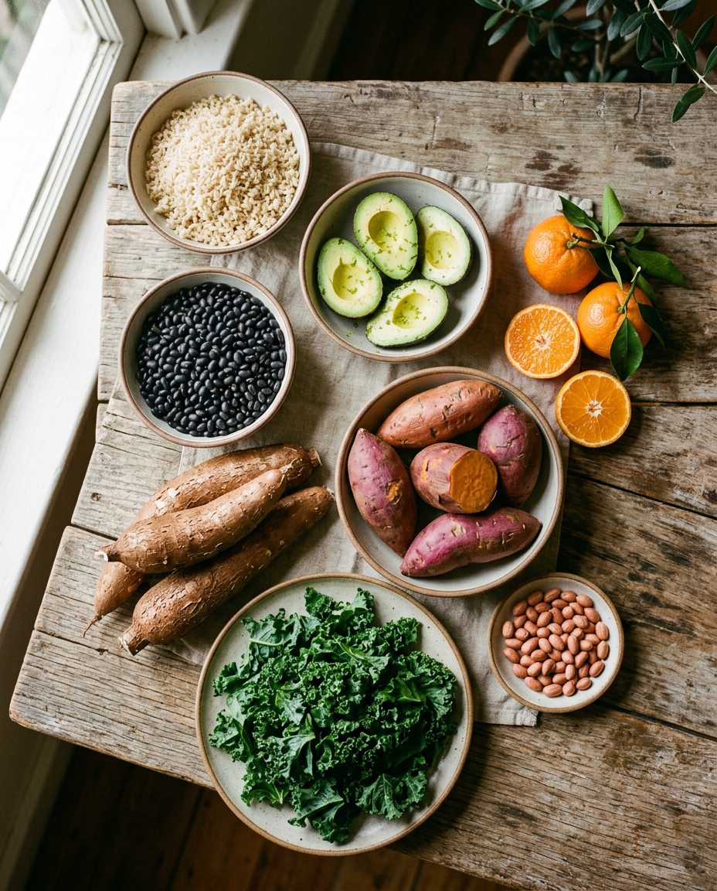
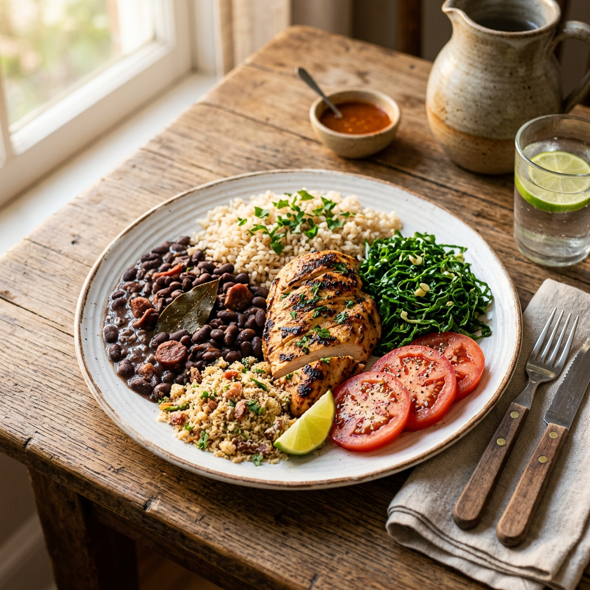
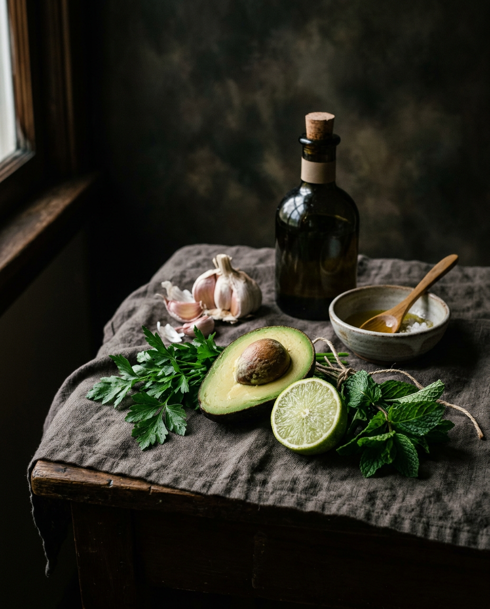
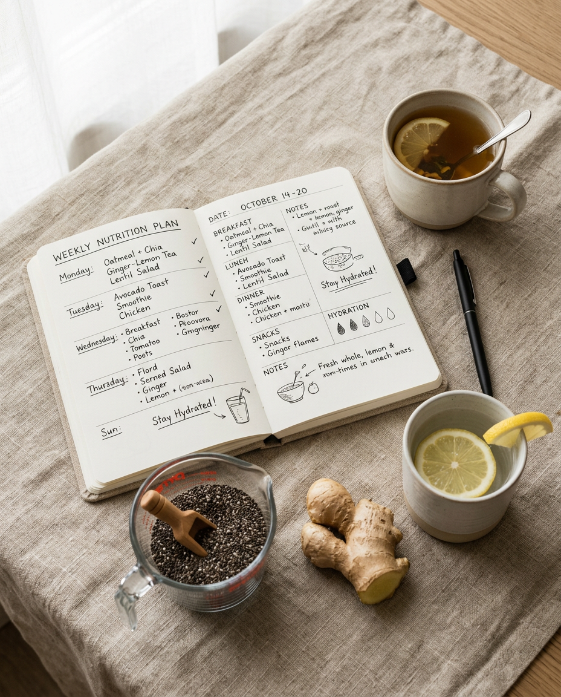
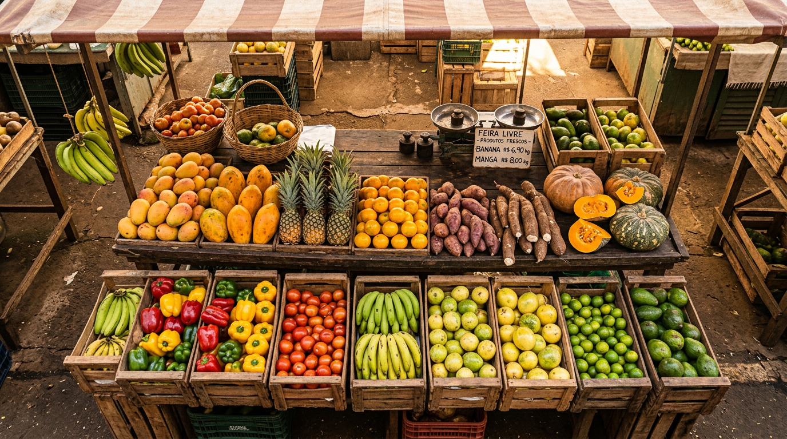

Sou Isis, nutricionista na Ilha do Governador. Acompanho adultos e executivos que querem mais energia, melhor composição corporal e uma relação tranquila com a comida. Online e presencial.

Antes de qualquer plano, a gente olha para o que você já tem em casa. Estes são os grupos de alimentos que costumo recomendar como base. Simples, acessível, brasileiro.

01 . BaseEnergia de verdade, com fibra. O esqueleto de qualquer refeição bem montada.

02 . FolhasCouve, brócolis, abóbora, cenoura. Cores no prato, minerais no corpo.

03 . Gorduras boasGordura boa não falta, ela faz falta. Fonte de energia e saciedade.

04 . Frutas da estacaoManga, banana, tangerina, abacaxi. Variedade muda o apetite e a microbiota.
Frango, peixe, ovos, leguminosas. Ajustamos quantidade, não qualidade.
Comida sem sal não precisa. Tempero caseiro substitui indústrializado.
Antes de suplementar, a gente hidrata. Simples, esquecido, eficiente.
Chia, linhaça, aveia. Pequenas doses, grande impacto no transito intestinal.
Avaliação de composição por bioimpedância, leitura de exames e plano alimentar ajustado a sua rotina. Indicado para quem travou em placas, sente fadiga ou ganhou peso sem mudar a dieta.
Falar sobre metabolismoPara quem treina e quer resultado de verdade. Periodizacao nutricional, ajuste de macros para hipertrofia, emagrecimento ou performance, com suplementação sob critério.
Falar sobre esporteReeducação alimentar sem cortar grupos nem passar fome. Foco em densidade nutricional, saciedade e constância. Acompanhamento semanal nas primeiras semanas.
Falar sobre emagrecimentoPara quem busca mais energia, melhor sono e marcadores sanguineos em dia. Atendo casos de resistência a insulina, pré-diabetes, colesterol alterado e síndrome metabolica.
Falar sobre saúde metabolicaMinha formação e técnica, meu atendimento e humano. Acrédito que plano bom e plano que cabe na vida real, com o que tem na feira e no tempo que você tem.
Cada etapa tem um objetivo claro. Você sempre sabe onde esta, o que vem a seguir e o que espero de cada lado.
Você me conta o que esta buscando, seu histórico de saúde, rotina e o que já tentou. A gente ve se faz sentido seguir juntas e qual o tipo de acompanhamento indicado.
Presencial ou online. Aplico anamnese detalhada, analise de composição corporal por bioimpedância, leitura de exames recentes e mapeamento alimentar dos últimos dias.
Entrega em até 7 dias úteis. Documento com refeições, lista de compras, substituicoes e orientações específicas para o seu objetivo. Linguagem simples, sem contagem obsessiva.
Retornos periódicos para revisar resultados, ajustar o plano, tirar dúvidas e manter a constância. Suporte via WhatsApp para questoes pontuais entre as sessões.
Resposta rápida no WhatsApp, retorno agendado, linguagem direta. Não sou sua amiga no chat, sou sua nutricionista.
AtendimentoRefeições pensadas para o que você tem acesso, o tempo que você tem e o orcamento que você tem. Sem cardápio de revista.
PráticaMe chama no WhatsApp, me conta o que esta buscando. Se fizer sentido a gente segue. Se não, te indico o caminho certo mesmo assim.